mypaintr is a package for creating artistic sketch-like plots in R. It has three components:
- An R interface to the libmypaint library,
which lets you create and import Mypaint brushes. There’s a
mypaint_device()graphics device. - R functions to draw lines and shapes with a “rough”, hand-drawn look.
- ggplot2 geoms and theme elements, so you can use Mypaint brushes and hand-drawn paths in ggplot graphs
Here are some demos.
library(mypaintr)
knitr::knit_hooks$set(mypaint = knitr_mypaint_hook(res = 288))
knitr::opts_chunk$set(
collapse = TRUE,
comment = "#>",
fig.ext = "png",
fig.width = 7,
fig.height = 5,
out.width = "75%"
)
palette("Dark 2")To use mypaintr from the command line, open the
mypaint_device() graphics device:
mypaint_device("output.png")Close the device with dev.off() to print your plot to
the output file.
Brushes
With the device active, you can use normal plot, grid and ggplot commands. You can also customize how lines and fills are drawn, using brushes.
Brushes are from the mypaint-brushes package, which you
can install via your package manager (e.g. apt or
brew).
set_brush("tanda/pencil-8b")
barplot(VADeaths, beside = TRUE, col = palette.colors(5), border = NA,
cex.names = 0.8)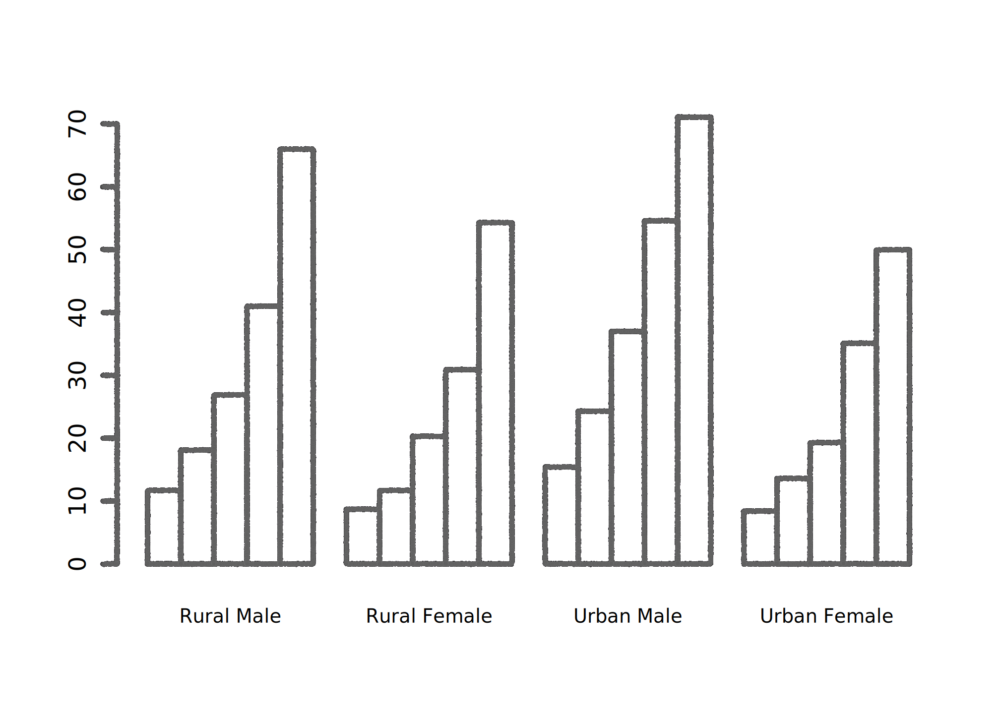
If you want different plot elements to look different, you can use
set_brush() between calls. Here we set the brush to
NULL to print an axis using (close to) standard R
graphics:
set_brush("classic/charcoal")
barplot(VADeaths, axes = FALSE,
beside = TRUE, col = palette.colors(5), border = NA,
cex.names = 0.8)
set_brush(NULL)
axis(side = 2, at = seq(0, 60, 20))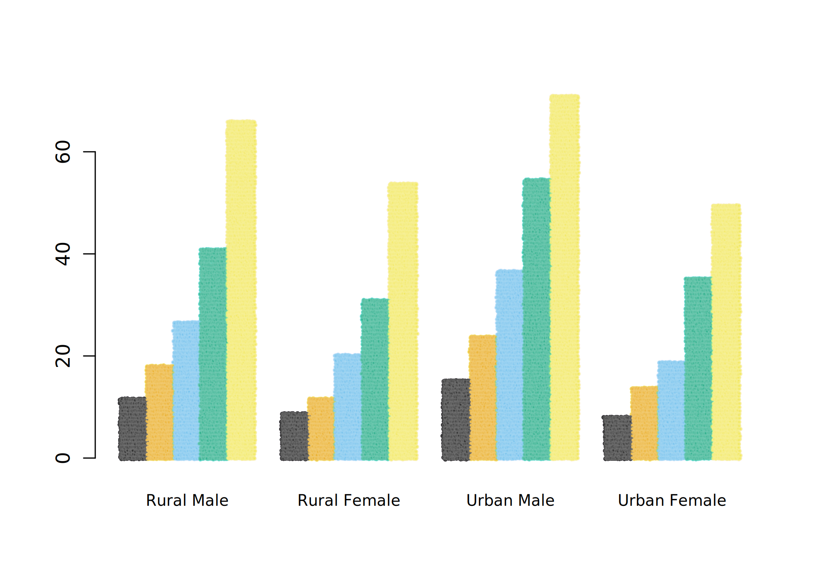
Good brushes
Not all Mypaint brushes work well with mypaintr (yet). Here are some brushes that I’ve found good to use, i.e. neither too crazy nor too similar to standard R:
- classic/charcoal
- classic/coarse_bulk_1 (and _2 and _3)
- classic/dry_brush
- classic/ink_blot
- classic/ink_eraser
- classic/kabura
- classic/pen
- classic/pencil
- classic/slow_ink
- classic/textured_ink
- deevad/2B_pencil
- deevad/4H_pencil
- deevad/chalk
- deevad/spray2
- Dieterle/HalfToneCMY#1
- Dieterle/Pencil-_Left_Handed
- Dieterle/Posterizer
- experimental/bubble
- experimental/track
- experimental/pixelblocking
- experimental/sewing
- experimental/small_blot
- experimental/spaced-blot
- experimental/speed_blot
- experimental/subtle_pencil
- experimental/track
- kaerhon_v1/inkster_l
- ramon/2B_pencil
- ramon/B-pencil
- ramon/P._Shade
- ramon/Pastel_1
- ramon/Pen
- ramon/Sketch_1
- ramon/Thin_Pen
- tanda/acrylic-05-paint
- tanda/charcoal-01
- tanda/charcoal-03
- tanda/charcoal-04
- tanda/marker-01
- tanda/marker-05
- tanda/oil-06-paint
- tanda/pencil-2b
- tanda/pencil-8b
Hands
The other way to customize plotting is to set the “hand”. While brushes change what is plotted along a given path, hands change the path itself, by adding jitter, multiple lines and other human-like quirks:
set_hand(human_hand())
barplot(VADeaths, beside = TRUE, col = NA, cex.names = 0.8)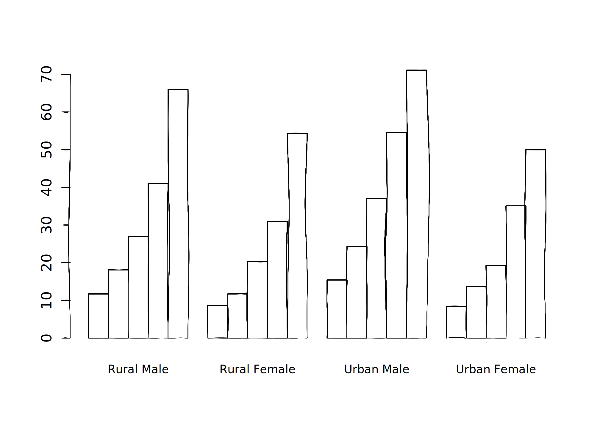
set_hand(hand(bow = 0, wobble = 0.01, multi_stroke = 2))
barplot(VADeaths, beside = TRUE, col = NA, cex.names = 0.8)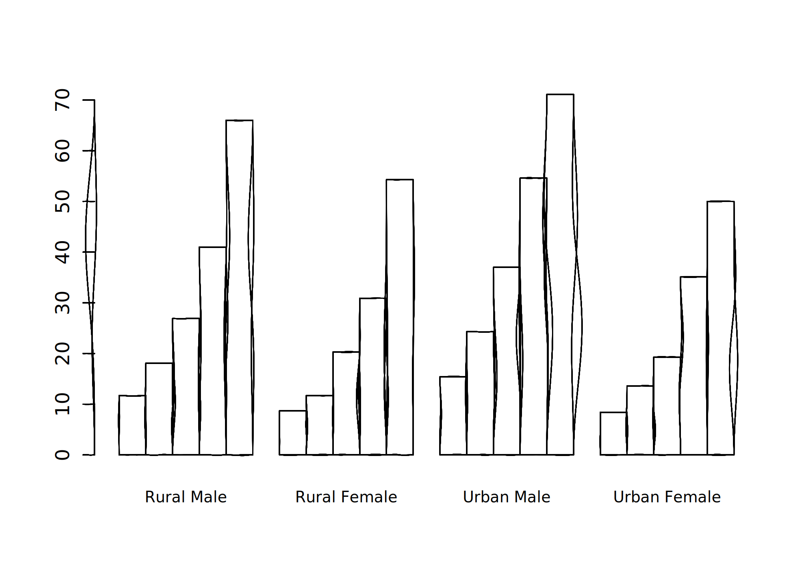
Combining brushes and hands, you can turn any R graphics into a sketch.
set_brush("classic/marker_small")
set_hand(human_hand(xtilt = 0.5, ytilt = -0.2))
plot(mpg ~ hp, data = mtcars, col = factor(mtcars$gear))
legend("topright", legend = 3:5, title = "Gears", col = 1:3,
horiz = TRUE, bg = "transparent", inset = 0.05, pch = 1)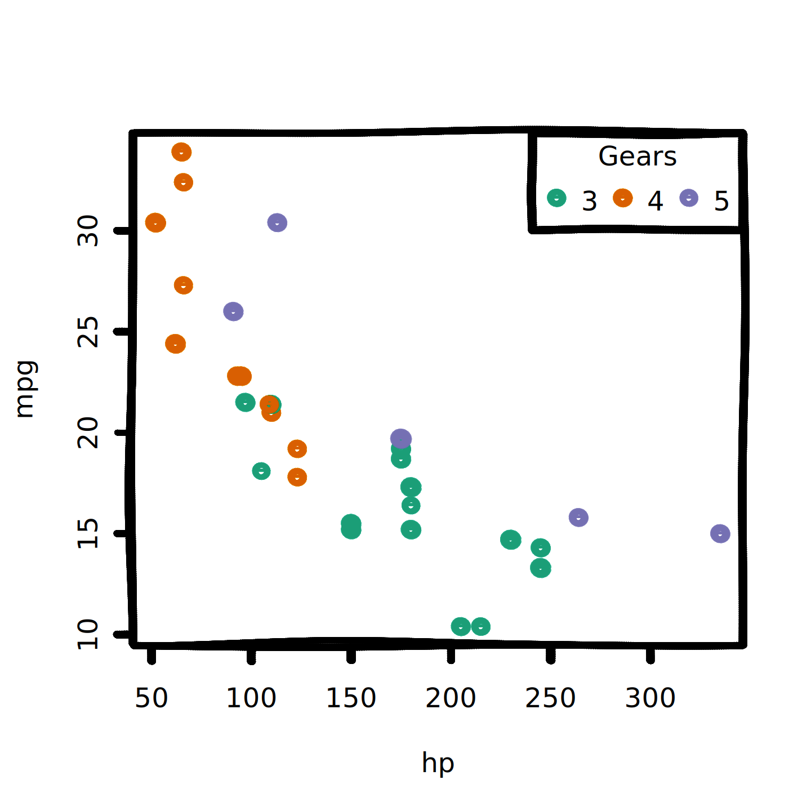
Rough lines and polygons
There is one glitch with hands: borders and fills don’t always match up. Below, both rectangle border and fills are plotted roughly, but the random roughness is computed separately for each of them.
set_hand(human_hand())
plot.new()
plot.window(c(0, 10), c(0, 10))
rect(2, 2, 8, 8, col = "orange", border = "black", lwd = 2)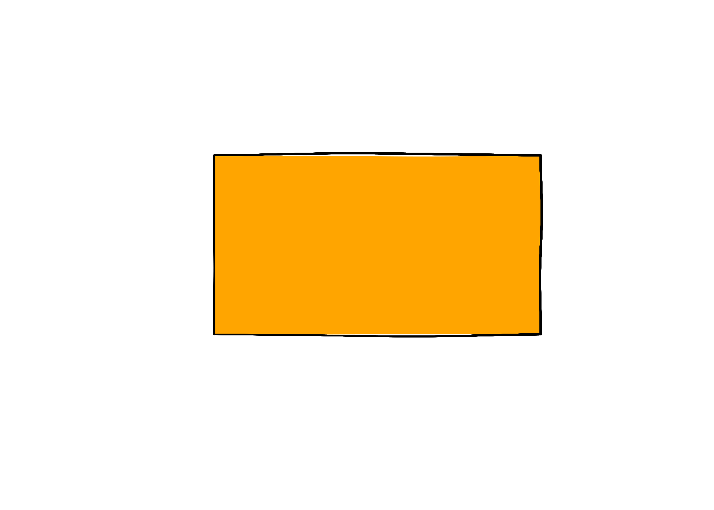
The draw_rough_* functions do two useful things:
- They always fill roughly drawn shapes correctly.
- They can be used with any graphics device.
The next chunks use knitr’s standard "png" device.
knitr::opts_chunk$get("dev")
#> [1] "ragg_png"
plot.new()
plot.window(c(1, 10), c(1, 10))
draw_rough_polygons(c(2, 4, 6), c(4, 2, 6), col = "red", hand = human_hand())
draw_rough_rect(8, 4, 5, 8, col = "blue3", fill_pattern = hatch(), hand = human_hand())
draw_rough_arrows(1, 9, 8, 9, col = "grey40", hand = human_hand())Control lines and fills with the hand argument:
plot.new()
plot.window(c(1, 10), c(1, 10))
my_hand <- hand(wobble = 0.01, multi_stroke = 2)
draw_rough_polygons(c(2, 4, 6), c(4, 2, 6), col = "red", hand = my_hand)
draw_rough_rect(8, 4, 5, 8, col = "blue3", hand = my_hand, fill_pattern = hatch())
draw_rough_arrows(1, 9, 8, 9, col = "grey40", hand = my_hand)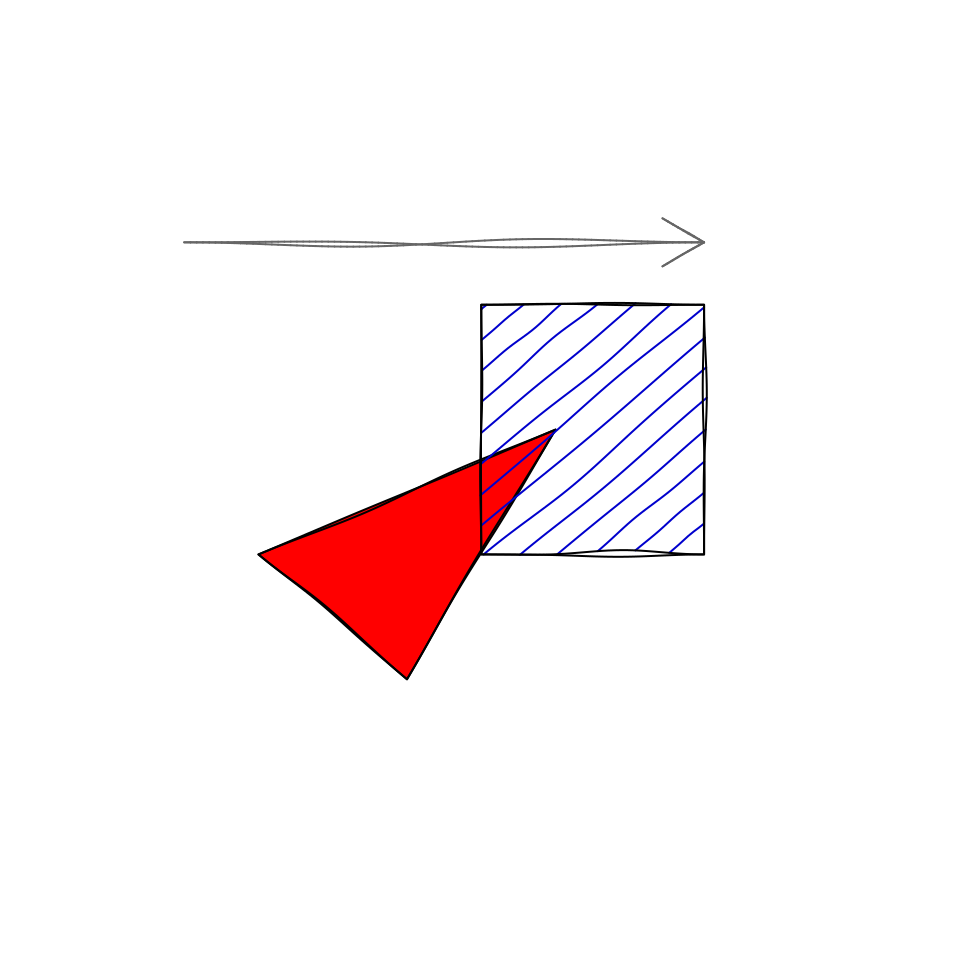
Here’s a demo of the bow and wobble
parameters on an ordinary png device:
plot(c(-0.01, 0.11), c(-0.01, 0.11), type = "n",
xlab = "bow", ylab = "wobble",
mar = rep(0.1, 4))
for (wobble in 0:5 * 0.02) for (bow in 0:5 * 0.02) {
my_hand <- hand(wobble = wobble, bow = bow)
draw_rough_rect(
bow - 0.008, wobble - 0.008,
bow + 0.008, wobble + 0.008,
hand = my_hand,
col = "red"
)
}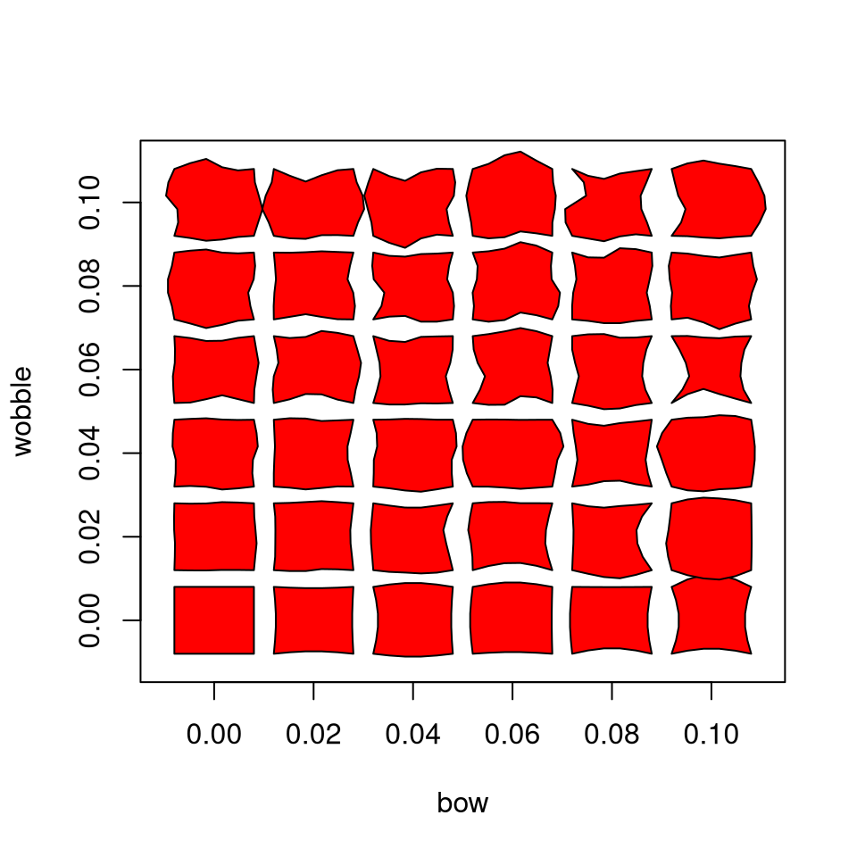
Pattern Fills
Use the fill_pattern argument to fill a polygon using
hand-sketched lines. mypaintr knows four ways to do this. Again, these
work with base graphics devices via the draw_rough_*
functions:
plot(0:10, 0:10, type = "n")
hand <- human_hand()
draw_rough_rect(0, 1, 4, 5, col = "blue", hand = hand,
fill_pattern = hatch())
draw_rough_rect(0, 6, 4, 10, col = "green4", hand = hand,
fill_pattern = crosshatch())
draw_rough_rect(6, 1, 10, 5, col = "red3", hand = hand,
fill_pattern = zigzag())
draw_rough_rect(6, 6, 10, 10, col = "grey30", hand = hand,
fill_pattern = jumble())
text(c(2, 2, 8, 8), c(0.5, 5.5, 0.5, 5.5),
labels = c("hatch", "crosshatch", "zigzag", "jumble"))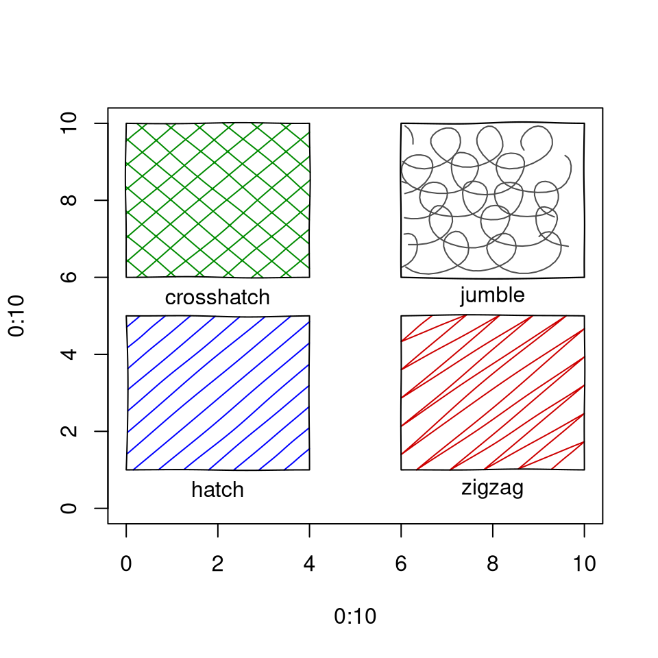
Rough drawing and mypaint_device
You can still use the draw_rough_* functions with
mypaint_device active. This lets you use both hands and
brushes.
The next chunk also shows how to use different brushes for stroke and fill:
plot(1:10, 1:10, type = "n")
set_brush("classic/ink_blot", type = "fill")
set_brush(NULL, type = "stroke")
my_hand <- hand(wobble = 0.01, multi_stroke = 2)
draw_rough_polygons(c(2, 4, 6), c(4, 2, 6), col = "red", hand = my_hand)
set_brush("ramon/Pen")
draw_rough_rect(8, 4, 5, 8, col = "blue3", hand = my_hand, fill_pattern = hatch())
draw_rough_arrows(1, 9, 8, 9, col = "grey40", hand = my_hand)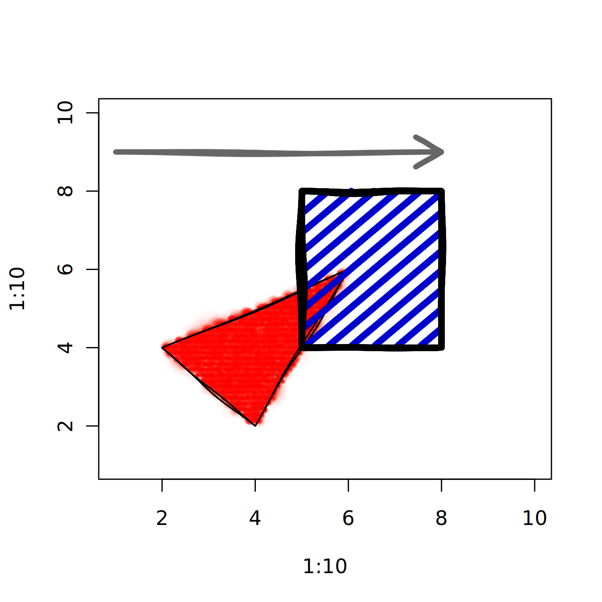
ggplot2
Here’s what you don’t want to do:
library(ggplot2)
mypaint_device("output.png")
set_hand(hand())
set_brush("classic/dry_brush")
ggplot(diamonds) +
geom_bar(aes(cut, fill = cut)) +
theme_minimal() This will produce a graph, but:
- We probably want to have some elements, e.g. grid lines, look “normal”. Here, everything will be hand-drawn.
- Rendering the white plot background rectangle(s) by brush will be slow.
To only use brush elements for part of a ggplot, use
mypaint_wrap(). Here’s a mypaint bar graph, but with a
clean background and straight grid lines:
library(ggplot2)
# on the command line:
# mypaint_device("output.png")
ggplot(diamonds) +
mypaint_wrap(
geom_bar(aes(cut, fill = cut)),
brush = "classic/dry_brush",
hand = hand()
) +
theme_minimal() 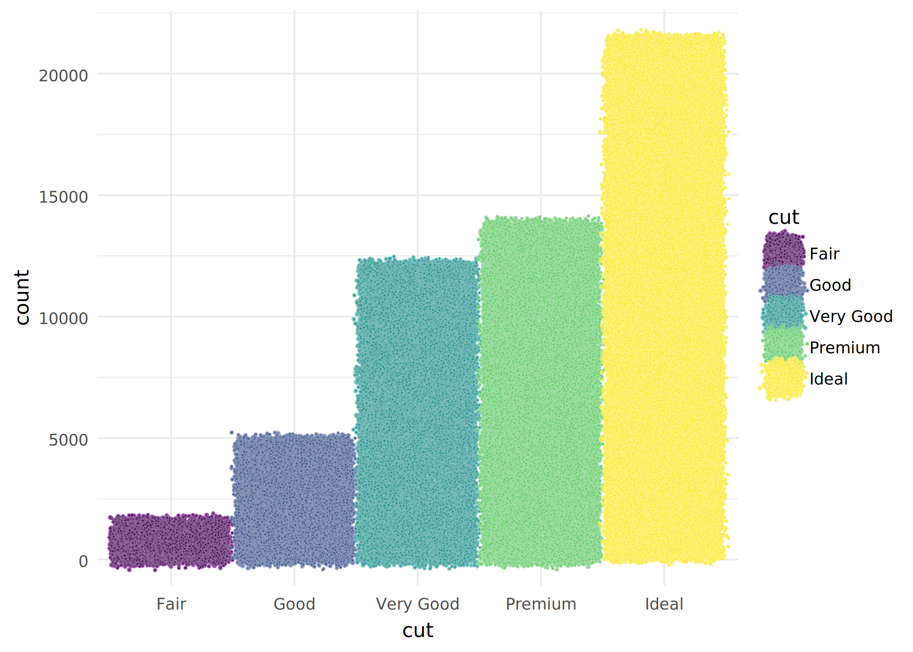
You can also use the special geoms geom_mypaint_bar()
and geom_mypaint_col(). As well as brushes and hands, these
let you use fill patterns, like zigzag() and
jumble().
ggplot(diamonds) +
geom_mypaint_bar(aes(cut, fill = cut, colour = cut),
brush = "deevad/ballpen",
fill_pattern = zigzag(padding = 0.1),
hand = human_hand()) +
theme_minimal() 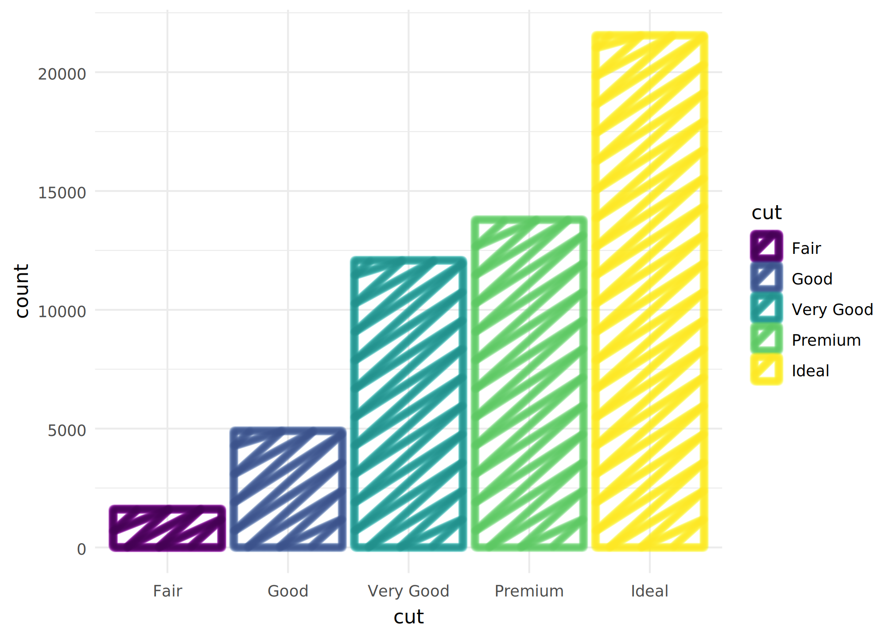
To save your output, you can either use mypaint_device()
and dev.off() as usual, or run
ggsave("output.png", dev = mypaint_device). The latter has
the advantage that you can preview your plot live, though it won’t have
the mypaintr customizations until you save it.
Using mypaintr in knitr
Knitr replays graphics on its own device. To make this work while dynamically updating the device within chunks, you must install a special hook:
knitr::knit_hooks$set(mypaint = knitr_mypaint_hook())Then in chunks where you use mypaint_device, you need to
set chunk options mypaint=TRUE, fig.keep="none". You can
set them for all chunks like this:
knitr::opts_chunk$set(
mypaint = TRUE,
fig.keep = "none"
)Don’t set dev explicitly: the hook will do it for
you.
One limitation is that you cannot produce more than one plot per chunk. If you need to do this, try setting the following chunk options:
this may work, so long as you don’t edit device options within a single plot.
Advanced hand control: pressure, speed and tilt
You can set pressure, speed, stylus x and y tilt, and stylus barrel
rotation in hand(). Different brushes react in different
ways to each of these.
Pressure can vary over the whole stroke. Pass a “pressure profile” in
to hand(pressure = ...). A pressure profile is a
two-argument function which takes (t, turn) and returns a
value between 0 and 1. t is the time through the stroke
from 0 to 1. turn is higher for sharp turns and is between
0 and 1. There are three built-in pressure profiles:
pressure_flat(), pressure_smooth() and
pressure_human().
plot.new()
plot.window(c(0, 10), c(0, 11))
set_brush("classic/pen")
x <- seq(0.1, sqrt(10), length.out = 100)^2
y <- sin(seq(0, 10 * pi, length.out = 100)) * 0.6
text(0, 9.8, "pressure_flat()", adj = 0)
set_hand(hand(pressure = pressure_flat()))
lines(x, y + 9, lwd = 0.8, col = "red4")
text(0, 7.8, "pressure_smooth()", adj = 0)
set_hand(hand(pressure = pressure_smooth()))
lines(x, y + 7, lwd = 0.8, col = "red4")
text(0, 5.8, "pressure_human()", adj = 0)
set_hand(hand(pressure = pressure_human()))
lines(x, y + 5, lwd = 0.8, col = "red4")
text(0, 3.8, "pressure_human(taper = 1, start = 0, peak = 0.7)", adj = 0)
set_hand(hand(pressure = pressure_human(taper = 1, start = 0, peak = 0.7)))
lines(x, y + 3, lwd = 0.8, col = "red4")
text(0, 1.8, "pressure_human(turn_taper = 1, start = 0)", adj = 0)
set_hand(hand(pressure = pressure_human(turn_taper = 1, start = 0)))
lines(x, y + 1, lwd = 0.8, col = "red4")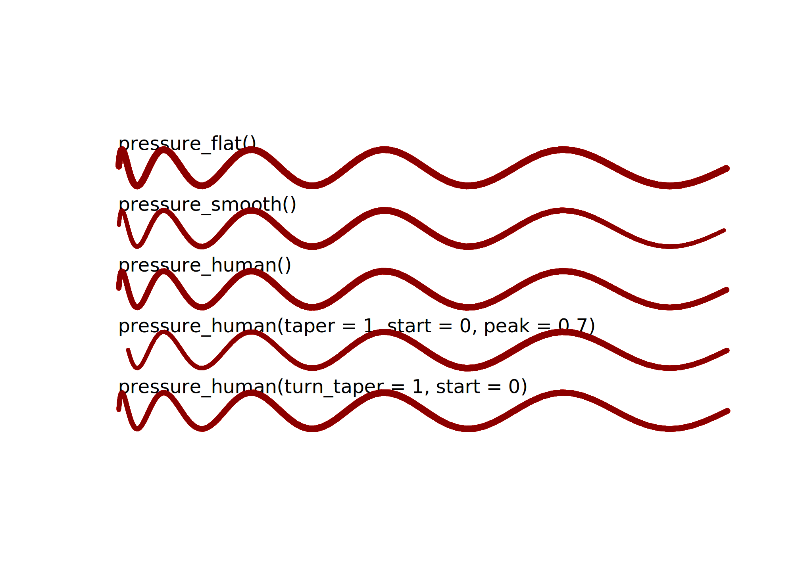
Many brushes are affected by speed:
plot.new()
plot.window(c(0, 1.5), c(0, 5.5))
set_brush("deevad/chalk")
speeds <- c(0.05, 0.25, 2)
x <- 0.5 + seq(0.07, 0.93, length.out = 180)
y <- 0.2 * sin(2 * pi * 2.1 * x)
ybase <- 5
col <- scales::alpha("red4", 0.75)
for (s in speeds) {
set_hand(hand(speed = s, pressure = pressure_human()))
lines(x, y + ybase, lwd = 2.2, col = col)
text(0, ybase, paste("speed:", s), adj = 0)
ybase <- ybase - 2
}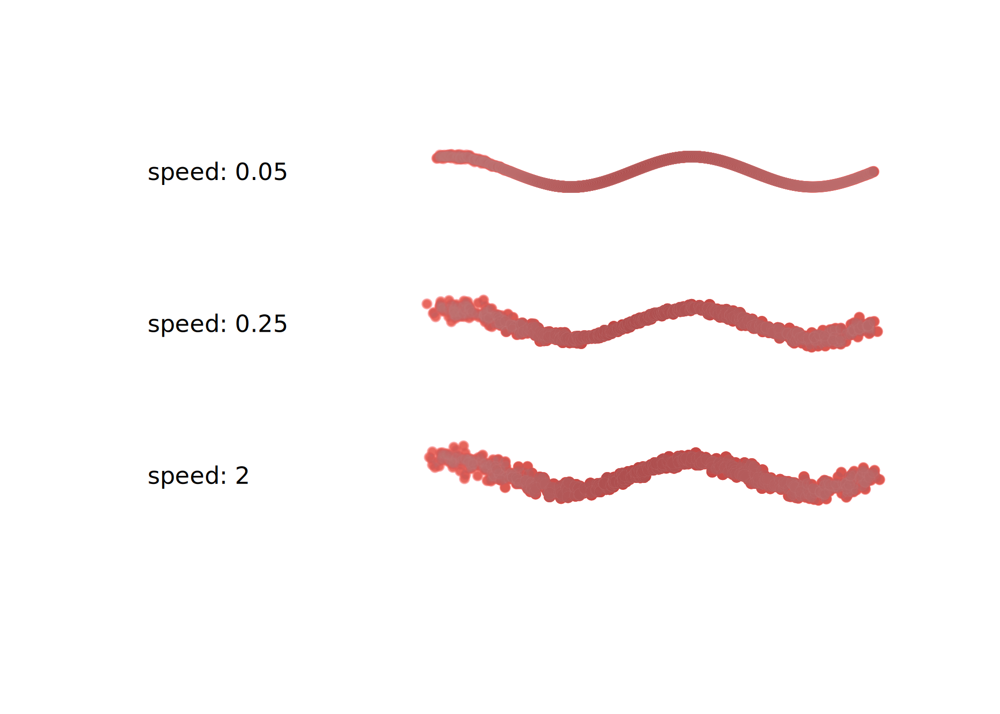
xtilt and ytilt affect how the “stylus” is
tilted, which changes the shape of some brushes:
plot.new()
plot.window(c(0, 14), c(0, 50))
set_brush("classic/marker_fat")
x <- 4 + seq(0.1, sqrt(10), length.out = 100)^2
y <- sin(seq(0, 10 * pi, length.out = 100)) * 0.6
ybase <- 45
for (xtilt in c(0, 0.5, 1)) {
for (ytilt in c(-0.5, 0, 0.5)) {
set_hand(hand(xtilt = xtilt, ytilt = ytilt))
lines(x, y + ybase, col = "red4")
text(0, ybase, adj = 0,
labels = paste("xtilt:", xtilt, " ytilt:", ytilt))
ybase <- ybase - 5
}
}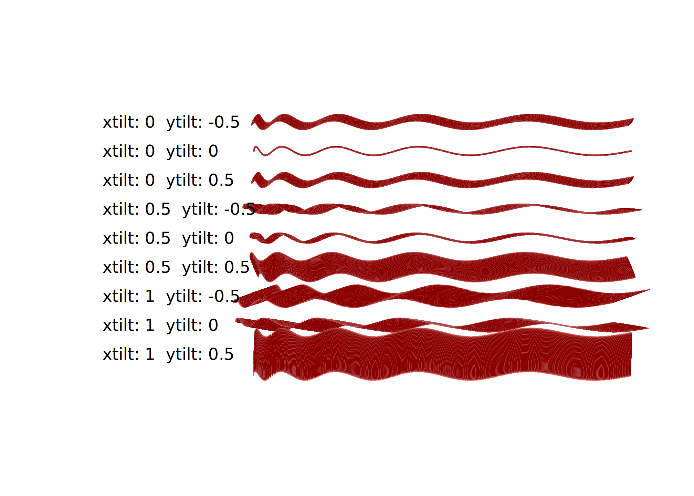
I don’t actually know any pens that respond to barrel rotation, but you could always make your own….